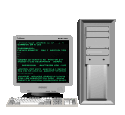
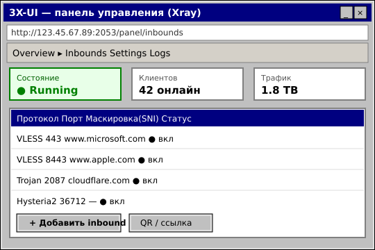

|
 ПАНЕЛЬ 3X-UI★彡 УПРАВЛЕНИЕ VLESS И VPN 2026 彡★
Как установить и настроить панель 3X-UI — удобное управление Xray: VLESS Reality, клиенты, QR-коды, подписки и статистика 

 ЧТО ТАКОЕ 3X-UI
ЧТО ТАКОЕ 3X-UI
3X-UI (MHSanaei/3x-ui) — самая популярная веб-панель для управления ядром Xray. Через браузер ты создаёшь подключения (VLESS, VMess, Trojan, Shadowsocks, Wireguard, Hysteria, TUIC), управляешь клиентами, видишь статистику трафика и выдаёшь QR-коды и подписки. Это самый простой способ поднять свой VPN без ручной правки конфигов. 
 ПОШАГОВАЯ ИНСТРУКЦИЯ
ПОШАГОВАЯ ИНСТРУКЦИЯ
1 Подготовь VPS Нужен сервер не в России: минимум 1 ГБ RAM, Ubuntu 20.04+ или Debian 11+. Подключись по SSH под root. ssh root@ТВОЙ_IP apt update && apt upgrade -y 2 Установи 3X-UI одной командой Официальный скрипт сам поставит Xray и панель. В конце он покажет адрес панели, логин и пароль. bash <(curl -Ls https://raw.githubusercontent.com/mhsanaei/3x-ui/master/install.sh) 
3 Войди в панель и смени пароль Открой http://IP:порт/путь в браузере. ПЕРВЫМ делом смени стандартный логин и пароль на сложные — панель открыта в интернет.
4 Создай VLESS Reality inbound Inbounds → «+». Протокол VLESS, Security Reality, Flow xtls-rprx-vision. В Dest/SNI укажи маскировку (www.microsoft.com:443). Панель сгенерирует ключи и UUID.
 5 Добавь клиентов и выдай QR/ссылку В созданном inbound добавляй клиентов. Каждому — своя ссылка vless:// или QR. Можно настроить подписку (subscription) с авто-обновлением.
6 Включи BBR, fail2ban и бэкап В меню скрипта x-ui есть пункты для BBR (ускорение) и защиты. Настрой авто-бэкап конфигурации в Telegram-бота панели. x-ui # откроет меню управления панелью 

Свой сервер — это VPS за деньги каждый месяц, обновления, починка после блокировок и возня с конфигами. Если нужен просто рабочий интернет без головной боли — возьми готовое: Промокод VNESPISKA = −20% ★ дешевле, чем платить за VPS 
|